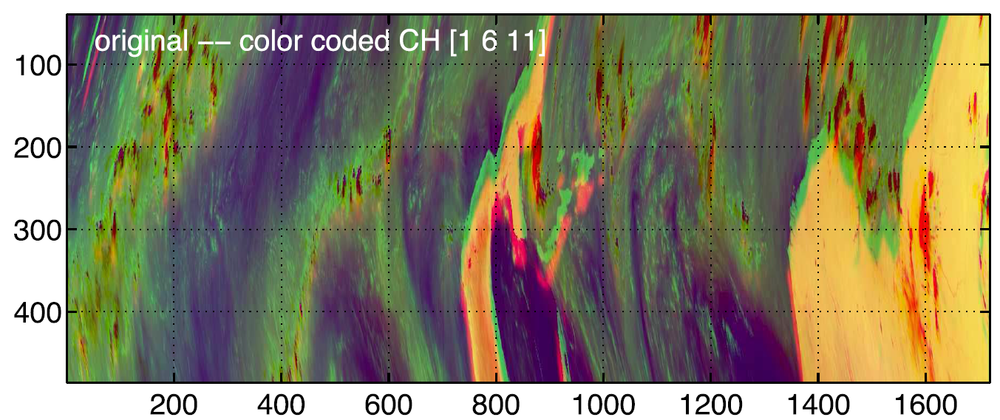
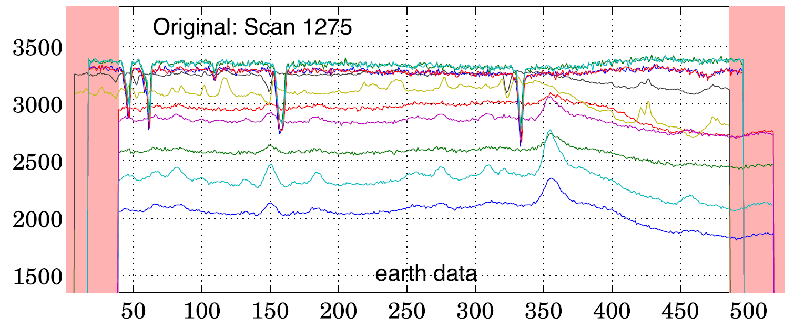
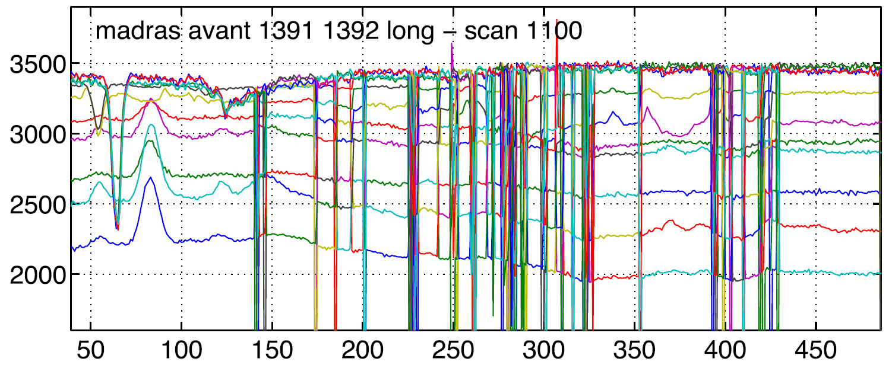
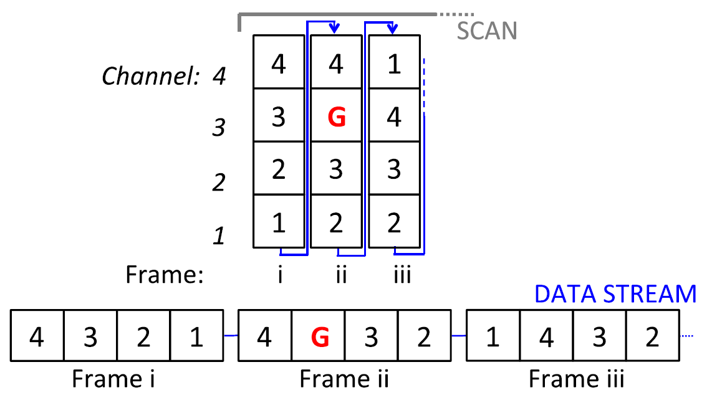
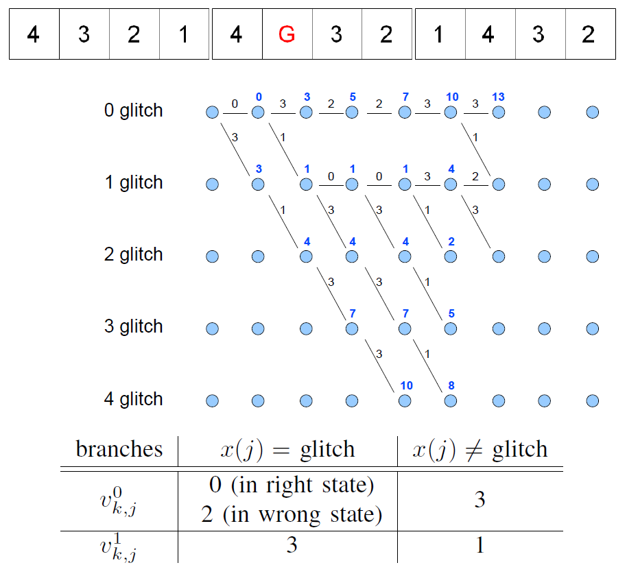
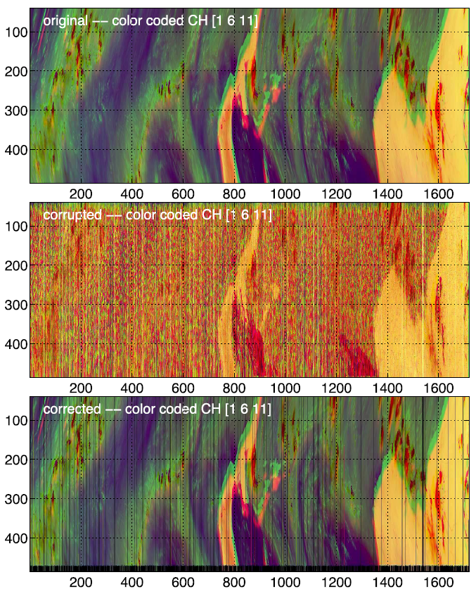

Detection and correction of glitches in a multiplexed multichannel data stream
Born from a close collaboration between the Indian and French space agencies (namely, ISRO and CNES, respectively), the MEGHA-Tropiques mission aims at developing a monitoring system dedicated to the study of the tropical atmosphere. The scientific data acquired by the MADRAS instrument embedded in the MEGHA-Tropiques satellite take the form of a multichannel image, as depicted in Fig. 1 using an arbitrary composition color.

Fig. 1. Original image acquired by MADRAS.
{kind=link}
This image, composed of M = 11 individual channels, consists of a set of P contiguous scans, where one given scan corresponds to a unique column of this image. After sampling correction, each scan is composed of T multivalued pixels, called frames. Each frame is thus a vector of M individual samples and corresponds to a given pixel observed in the M channels. The number T of frames depends on the type of acquired data: Earth data, which are considered in this paper, are composed of T = 526 frames. A typical example of a scan is depicted in Fig. 2, where the signals recorded in the M channels are depicted in distinct colors.

Fig. 2. Original image acquired by MADRAS.
{kind=link}
After a few weeks in orbit, an anomaly in the communication chain between two electronic devices was detected. This anomaly leads to a mixing of the channels that compose the images provided by MADRAS. More precisely, additional data can be randomly inserted into the main data streams associated with each column of the MADRAS images. A typical example of a scan corrupted by several glitches is depicted in Fig. 3.

Fig. 3. Example of Earth data corrupted by several anomalies.
{kind=link}
A schematic view of the corruption affecting a scan is depicted in Fig. 2, where, for conciseness, only M = 4 channels have been considered and the data flow is split into T = 3 successive frames.

Fig. 3. Schematic view of anomaly in the data stream. The symbol "G" is used to represent the glitch that has appeared in channel #3.
{kind=link}
This work presents a new strategy to correct the Earth data corrupted by spurious samples that are randomly included in the multiplexed data stream provided by the MADRAS instrument. The proposed strategy relies on the construction of a trellis associated with each scan of the multichannel image, modeling the possible occurrences of these erroneous data. A specific weight that promotes the smooth behavior of the signals recorded in each channel is assigned to each transition between trellis states. The design of the trellis is illustrated in Fig. 4 on a toy example with a data stream composed of 12 samples, including 1 glitch and 11 valid measurements, distributed into T=3 frames of M = 4 channels (the toy example corresponds to that shown in Fig. 2), using a trellis of S=5 possible states with constant and artificial branch weights. The trellis is depicted at the instant of reception of the tenth sample x(10).

Fig. 4. Illustration of the Viterbi algorithm on a toy example with frames consisting of M=4 channels, using a trellis with S=5 states (0 to 4 glitches). The blue disks correspond to the nodes of the trellis (from left to right, the first column is the initial node before receiving data, and the last two columns have not yet received data)..
{kind=link}
The joint detection and correction of the erroneous data are conducted using a dynamic programming algorithm for minimizing the overall cost function throughout the trellis. Simulation results obtained on synthetic and real MADRAS data demonstrate the effectiveness of the proposed solution and are illustrated

Fig. 5. First panel: Original image. Second panel: Corrupted image. Third panel: Corrected image.
{kind=link}
The proposed strategy is detailed in the paper published in IEEE Trans. Geosci. Remote Sens.:
- article
 .
.
Complementary results and supporting materials are available in the related technical report:
- article .